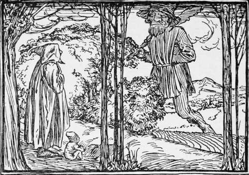

Thumbling The Dwarf And Thumbling The Giant
Description
This section is from the book "Household Tales by Brothers Grimm", by Brothers Grimm. Also available from Amazon: Household Tales by Brothers Grimm.
Thumbling The Dwarf And Thumbling The Giant
An honest husbandman had once upon a time a son born to him who was no bigger than my thumb, and who for many years did not grow one hair's breadth taller. One day, as the father was going to plough in his field, the little fellow said, "Father, let me go too." "No," said his father, " stay where you are; you can do no good out of doors, and if you go perhaps I may lose you." Then little Thumbling fell a-crying : and his father, to quiet him, at last said he might go. So he put him in his pocket, and when he was in the field pulled him out, and set him upon the top of a newly-made furrow, that he might be able to look about him.
While he was sitting there, a great giant came striding over the hill. "Do you see that tall steeple-man?" said the father; " if you don't take care he will run away with you." Now he only said this to frighten the little boy and keep him from straying away. But the giant had long legs, and with two or three strides he really came close to the furrow, and picked up Master Thum-bling, to look at him as he would at a beetle or a cockchafer. Then he let him run about his broad hand, and taking a liking to the little chap went off with him. The father stood by all the time, but could not say a word for fright; for he thought his child was really lost, and that he should never see him again.
But the giant took care of him at his house in the woods, and laid him in his bosom, and fed him with the same food that he lived upon himself. So Thumbling, instead of being a little dwarf, became like the giant— tall, and stout, and strong:—so that at the end of two years, when the old giant took him into the woods to try him, and said, " Pull up that birch-tree for yourself to walk with," the lad was so strong that he tore it up by the root. The giant thought he would make him a still stronger man than this : so after taking care of him two years more he took him into the wood to try his strength again. This time he took hold of one of the thickest oaks, and pulled it up as if it were mere sport to him. Then the old giant said, "Well done, my man! you will do now." So he carried him back to the field where he first found him.
His father happened to be just then ploughing his field again, as he was when he lost his son. The young giant went up to him and said, " Look here, father, see who I am :—don't you know your own son ?" But the husbandman was frightened, and cried out, "No, no, you are not my son; begone about your business." "Indeed, I am your son ; let me plough a little, I can plough as well as you." " No, go your ways," said the father; but as he was afraid of the tall man, he at last let go the plough, and sat down on the ground beside it. Then the youth laid hold of the ploughshare, and though he only pushed with one hand, he drove it deep into the earth. The ploughman cried out, "If you must plough, pray do not push so hard; you are doing more harm than good " : but his son took off the horses, and said, " Father, go home, and tell my mother to get ready a good dinner; I'll go round the field meanwhile." So he went on driving the plough without any horses, till he had done two mornings' work by himself. Then he harrowed it; and when all was over, took up plough, harrow, horses and all, and carried them home like a bundle of straw.
When he reached the house he sat himself down on the bench, saying, " Now, mother, is dinner ready ?" " Yes," said she, for she dared not deny him anything, so she brought two large dishes full, enough to have lasted herself and her husband eight days; however, he soon ate it all up, and said that was but a taste. " I see very well, father, that I shall not get enough to eat at your house; so if you will give me an iron walking-stick, so strong that I cannot break it against my knees, I will go away again." The husbandman very gladly put his two horses to the cart, and drove them to the forge; and brought back a bar of iron, as long and as thick as his two horses could draw: but the lad laid it against his knee, and snap it went, like a beanstalk. " I see, father," said he, " you can get no stick that will do for me, so I'll go and try my luck by myself."
Then away he went, and turned blacksmith, and travelled till he came to a village where lived a miserly smith, who earned a good deal of money, but kept all he got to himself, and gave nothing away to anybody. The first thing he did was to step into the smithy, and ask if the smith did not want a journeyman. "Ay," said the cunning fellow, as he looked at him and thought what a stout chap he was, and how lustily he would work and earn his bread,—"What wages do you ask?" "I want no pay," said he; "but every fortnight, when the other workmen are paid, you shall let me give you two strokes over the shoulders, just to amuse myself." The old smith thought to himself he could bear this very well, and reckoned on saving a great deal of money, so the bargain was soon struck.
The next morning the new workman was about to begin to work, but at the first stroke that he hit, when his master brought him the iron red hot, he shivered it in pieces, and the anvil sunk so deep into the earth that he could not get it out again. This made the old fellow very angry: "Holla! " cried he, "I can't have you for a workman, you are too clumsy; we must put an end to our bargain." "Very well," said the other, "but you must pay for what I have done; so let me give you only one little stroke, and then the bargain is all over." So saying, he gave him a thump that tossed him over a load of hay that stood near. Then he took the thickest bar of iron in the forge for a walking-stick, and went on his way.
When he had journeyed some way he came to a farmhouse, and asked the farmer if he wanted a foreman. The farmer said, "Yes," and the same wages were agreed for as before with the blacksmith. The next morning the workmen were all to go into the wood ; but the giant was found to be fast asleep in his bed when the rest were all up and ready to start, " Come, get up," said one of them to him ; " it is high time to be stirring : you must go with us." "Go your way," muttered he, sulkily; "I shall have done my work and get home long before you." So he lay in bed two hours longer, and at last got up and cooked and ate his breakfast, and then at his leisure harnessed his horses to go to the wood.
Continue to:
- prev: Jorinda And Jorindel
- Table of Contents
- next: Thumbling The Dwarf And Thumbling The Giant. Continued
Tags
fairy tales, children's stories, brothers grimm, household tales